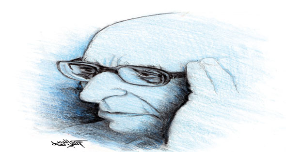

الأثنين
28 من رمضان 1442 هــ 10 مايو 2021
29℃ القاهرة, مصر
بيانات الطالب
| مصر | العالم | تكنولوجيا | رياضة | كاريكاتير |
زكى نجيب محمود.. فيلسوف مصر الاخير

الإرهابيون لا يدرسون
الفلسفة
ليس صدفة أنه لايوجد إرهابى درس الفلسفة، بل العكس تماما.
الإرهابيون يدرسون أى شيء إلا الفلسفة. وأغلب الذين ينضوون تحت لواء الإرهاب خريجو
كليات عملية لم تمر عليهم الفلسفة فى يوم من الأيام.
الفلسفة التى تعنى التفكير، والعقل والإرادة الحرة، لا تستقيم أبدأ مع فكر الطاعة,
ولذلك عندما غابت من حياتنا حضر الإرهاب.
القضاء على الإرهاب فى عقول وقلوب الأجيال يحتاج أن نبدأ بتدريس الفلسفة لكل مراحل
التعليم عملية ونظرية، فيتعلم النشء الحوار والأسئلة والجدل، ولا يسلمون عقولهم إلى
من يسمى نفسه أميرا يعدهم بالجنان مقابل أن يأخذ حياتهم وحياة بشر آخرين، حياة
بالأساس قصيرة، لا تستحق أن تعاش بعقلية الخراب والقتل.. ونحن فى هذا العدد نحتفى
بالذكرى 25 لرحيل الدكتور زكى نجيب محمود أحد أساطين الفلسفة العربية، الذى تقلب فى
الفلسفات الغربية والشرقية، وعندما وجد التراث يشدنا للخلف عاد إليه يلتهمه بعقله
ووجدانه ثم خرج علينا بصيحة الأصالة والمعاصرة، أى نأخذ من التراث مايدفعنا للتفكير
والعلم والحضارة. ونتوقف عن الإيمان بالخرافات التى تكبل عقولنا وتفكيرنا. تلك صيحة
فيلسوفنا التى لو أخذنا بها لأصبحنا فى طليعة الأمم ، واصبحت مشاكلنا هى كيفية
القضاء على الأمراض وإطالة عمر البشر وغزو الفضاء بدلا من مشكلات تقصير الجلباب
وترك اللحية وحف الشارب!
توفيق الحكيم يكتب: ماصنعه ليس بالقليل
أردت أن اهنئ الدكتور زكى نجيب محمود ببلوغه الثمانين... وكنت بالمستشفى ورقم
تليفونه ليس معى وفطنت إلى أن التهنئة بالكلمة ليست كافية، فمجرد مرور سنة من العمر
لا يعنى فى نظرى شيئا مهما... إنما المهم هو ما صنع الإنسان بهذا العمر... وما صنعه
زكى نجيب محمود فى عمره ليس بالقليل... لقد قرأ حتى ضعف بصره وحمل على كتفيه قضية
هى أجل وأخطر قضية فى حياتنا الفكرية: قضية تجديد الفكر العربى... وهو يواصل فى كل
كتاباته السير فى هذا الطريق مسلطا أشعة مصباحه الفكرى على كل المراحل التى فطنت
إلى هذا الطريق وحاولت أن تضيف حجرا فى بناء هذا التجديد... باحثا منقبا عن صفة هذا
التجديد وعناصره وملامحه كما يراه ويتمناه... وهو عمل شاق تحمله بصبر واصرار، دون
انتظار لشكر أو رغبة فى تكريم... لأنه يعلم أن دولة الفكر، خاصة فى بلادنا بعيدة عن
هذه العملة الذهبية التى يجرى تداولها فى ملاعب الاقدام وانتصاراتها ومغانى الأصوات
وألحانها... فالفكر مثل المحرك الخفى فى جوف السيارة... لا تراه الأعين، التى لا
ترى غير العجلات التى تسرع بالسيارة والنفير الذى يدوى بالتنبيه... أما المحرك
الصامت المسكين فلا يدرى كيف ينبه الناس إلى جوده القابع فى الداخل... وماذا يهمه
من ذلك مادام يقوم بواجبه وعمله الذى خلق له ورسالته التى كلف بها... وهى دفع
السيارة إلى السير... ولكن الذى سرنى هو أن أجد من بين المثقفين من يذكرك ويعرف
فضلك، ومنهم هذا الذى ارسل إلى ما ألقاه تنويها بعملك فى هذه المحاضرة الطويلة التى
أرجو أن تجد طريقها إلى النشر فى الأهرام دون أن يحول دون ذلك طولها وعدد
صفحاتها... ولا يوجد عندنا الآن مع الأسف مجلة متخصصة فى الفكر تتيح النشر لمثل هذه
الموضوعات العميقة... إضافة إلى أن رجال الفكر عندنا لم يعتادوا بعد التعاون
على حمل الفكرة الكبيرة... بل سلكوا مسلك المجتمع كله الآن... «مجتمع الصراصير» كما
اسميه دون قصد الإهانة أو السخرية... فهو مجتمع مختلف عن مجتمع النمل... فالنملة
عندما تعثر على قطعة سكر تجدها وقد اجتمعت حولها جماعة من النمل تتعاون على
حملها... أما مجتمع «الصراصير» فهو مثل مجتمعنا اليوم قلما تجد مجموعة من صرصار
تحمل فكرة وتعمقها وتفيد بها... لأن كل «صرصار» مشغول بنفسه فقط... ولهذا لا يوجد
بناء فكرى أو فلسفى أو أدبى يقوم شامخا متكاملا... انما الموجود أفراد كل فرد مشغول
بفكرته يحملها وحده، ولا يلتفت أو يهتم إلا بما يحمله هو... وهذا سر من اسرار تخلف
مجتمع «الصراصير» فمعذرة أيها العزيز زكى نجيب محمود... وربما يتغير الحال ويلتفت
الجميع إلى فكرتك العظيمة فى «تجديد الفكر العربى»... وأرجو أن احقق رجاء الدكتور
عاطف العراقى فى نشر كل أو ما يتيسر من محاضراته عنك... وهو أقل القليل تنويها
بأعمالك التى ستبقى ما بقى الفكر العربى.